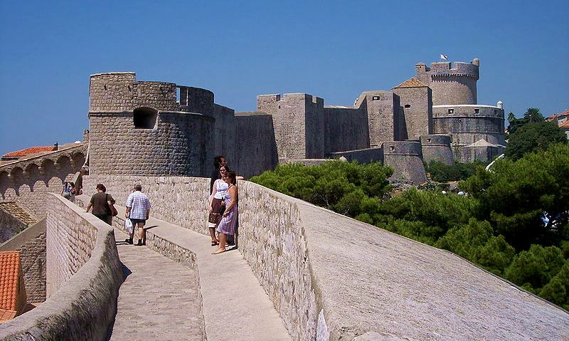
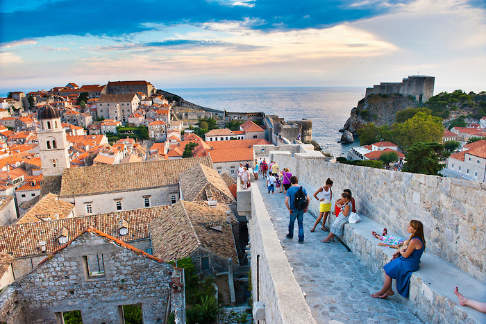

Walls of Dubrovnik were built in the 13th century. During the 15th century were built 15 towers as a part of the city walls, some of them are preserved until today. There used to be four gates leading into The City of Dubrovnik: the Pile Gate, The Ploce Gate, the Peskarija Gate and the Ponta Gate. Buža Gate was opened in the northern part of the Walls in 1908 during the Austrian rule its good to know of such wonders of mother earth at your destination
 